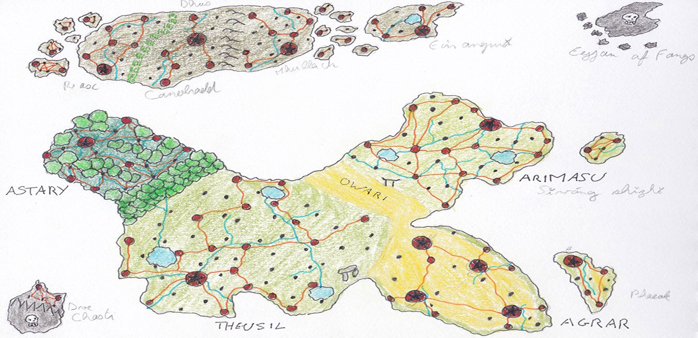
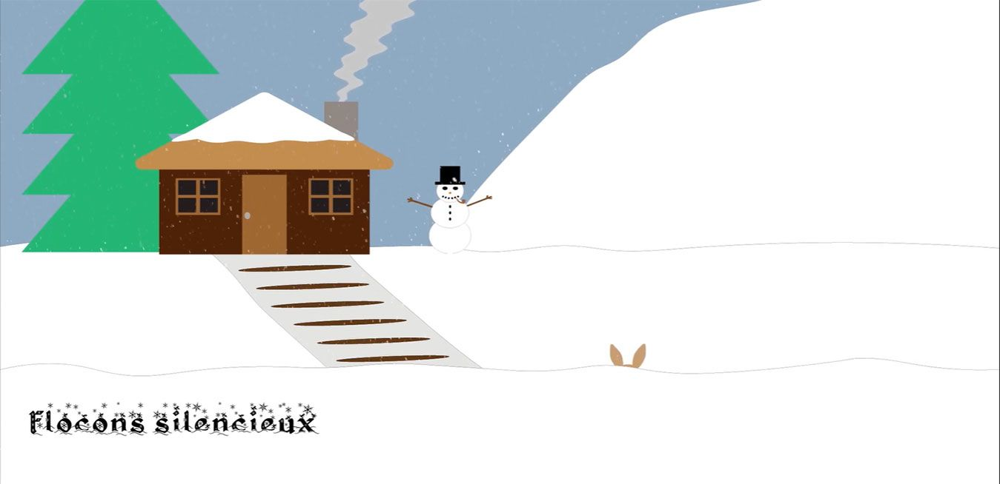
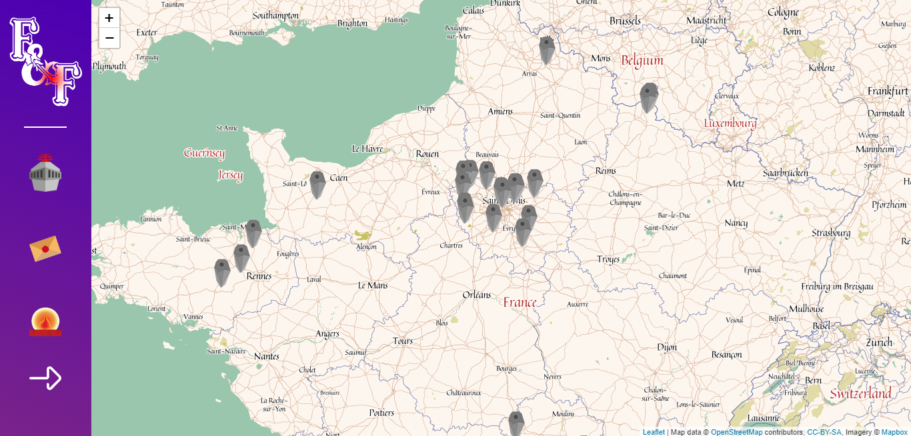
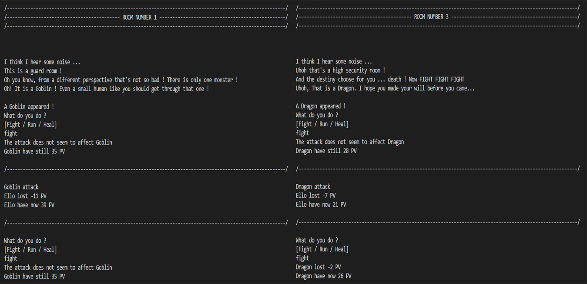
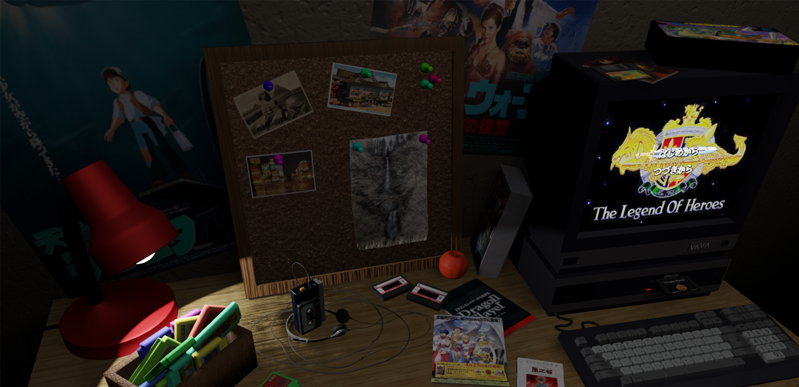
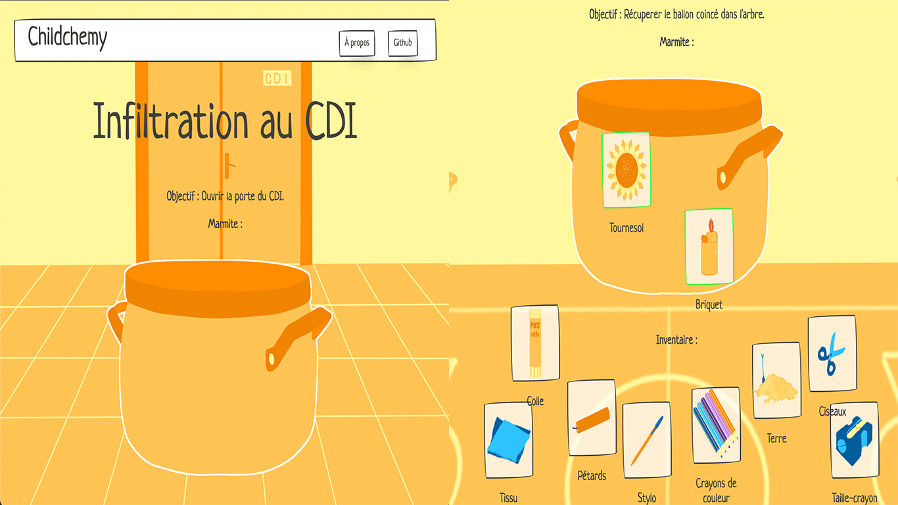
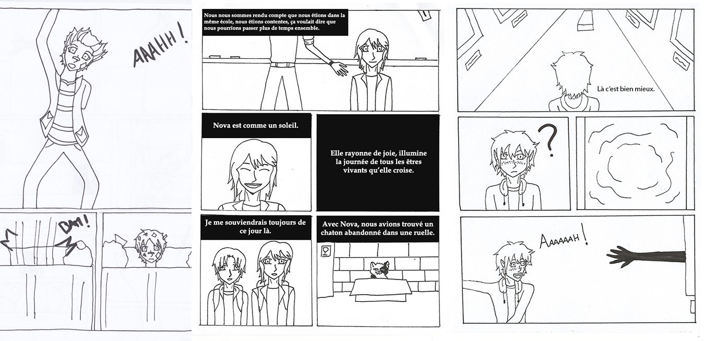

Inventaire
✖
Portrait Chinois

Type : Site web - Portrait
Rareté : Commune
Description : Un portrait chinois, cela vous dit quelque chose ? Son but est d'associer sa personnalité à un thème (plante, film, couleur…) et le tout présenté sous la formule : “Si j'étais…, je serais…” .
Dans ce projet, associant pour la première fois développement et design, venez découvrir ma personnalité aux travers des 7 thèmes choisis de ce portrait chinois.
Propriétés :
- Interface one-page avec menu intégré
- Animations déclanchées au défilement
- Non responsive
Composants : Photoshop (Maquette), Illustrator, HTML, CSS, JS
Obtention : Quête académique - Projet de 1ère année de DUT MMI, intégration web
Accès au site ✖
Curriculum Vitae Quest

Type : Site web - CV interactif
Rareté : Commune
Description : Réalisé pour l'une des parties du projet tutoré de 1ère année de DUT MMI, Curriculum Vitae Quest transforme un simple CV en aventure interactive. Inspiré par le jeu développé en Terminale (Brock's Quest), incarnez le personnage principal évoluant alors à travers les différentes sections du CV vous permettant de découvrir le parcours que j'avais à l'époque.
Propriétés :
- Déplacements avec touches directionnelles
- Animations au scroll
- Non responsive
Composants : Photoshop (Maquette/Cartes), HTML, CSS, JS
Obtention : Quête académique - Projet de 1ère année de DUT MMI, projet tutoré partie I
Accès au site ✖
WWI

Type : Site web - Plateforme de présentation
Rareté : Peu commune
Description : Réalisé en équipe de trois, WWI est la deuxième partie du projet tutoré de 1ère année de DUT MMI. Le but ? Présenter et promouvoir la formation MMI ainsi que ses étudiants aux lycéens. Ils peuvent alors découvrir les profils des étudiants et poser des questions.
En tant que développeuse full-stack, j'ai pu m'occuper d'une partie de l'intégration front-end, de la conception complète du script PHP et des requêtes SQL pour les fiches étudiantes et les filtres.
Propriétés :
- Sélection des étudiants affichés par des filtres (Bac, Régions, Rôles dans projet)
- Possibilité de laisser des questions via un formulaire
Composants : HTML, CSS, PHP, SQL, Photoshop (Maquette)
Obtention : Quête académique - Projet de 1ère année de DUT MMI, projet tutoré partie II
Accès au site ✖
Brock's Quest

Type : Jeu vidéo - RPG
Rareté : Rare
Description : Créer pour le projet du troisième trimestre de Terminale, Brock's Quest est une jeu d'aventure où vous incarnez Brock (oui très original comme nom) et dont le but est d'explorer les différents maps du jeu. Ce jeu était ma première expérience en développement de jeu vidéo et j'y ai assuré le rôle de développeuse.
Propriétés :
- Déplacement entre plusieurs cartes
- Pas de système de combat
Composants : Python, Pygame, Geany
Obtention : Quête académique - Projet de Terminale spé ISN
Voir la démonstration ✖
Mistralis
Type : Univers narratif
Rareté : Légendaire
Description : Mistralis, un monde fantastique, est composé de plusieurs pays et cultures, où coexistent (bien grand mot) des elfes, des humains et des nains. Du Royaume de Theusil à Dve Chasti, explorez les différentes cultures, factions, personnages de ce monde… et aussi leurs problèmes ! Ah et il y a aussi une recrudescence de monstres en ce moment…
Propriétés :
- Monde original
- Recherche sur des cultures anciennes pour référence
- Construction de cultures, gouvernements, mythologies
Composants : Dessin à la main, Pinterest, Perchance / Artbreeder (Personnage, lieux), Inkarnate (Carte), Fantasy Name Generator, World Anvil (Wiki)
Obtention : Quête personnelle commencée en 2018 - Projet en cours
Voir la fiche ✖
Hiver
Type : Vidéo - Motion Design
Rareté : Peu commune
Description : Un paysage hivernal… un lapin qui détale… une maisonnette endormie avec sa cheminée rougeoyante. Venez découvrir cette première expérience en motion design… et ce sans prendre froid !
Propriétés :
- Animation d'un poème
- Ambiance hivernale
Composants : Illustrator, After Effects, Audition
Obtention : Quête académique - Projet de 2e année de DUT MMI, motion design
Voir la vidéo ✖
Fabulas&Fabulis
Type : Site web - Carte interactive et collaborative
Rareté : Peu commune
Description : Les mythes et légendes… on en connaît tous quelques-uns mais souvent grecques ou romains. Et ceux de France alors ? Avec Fabulas&Fabulis, découvrez les différents mythes et légendes de France grâce à une carte interactive. Vous souhaitez participer ? Créer un compte pour soumettre vos légendes.
Propriétés :
- Carte personnalisée
- Interface administrateur
- Création de compte
Composants : HTML, CSS, JS (leaflet), PHP
Obtention : Quête académique - Projet de 2e année de DUT MMI, projet tutoré
Voir le site ✖
Dungeon Adventure
Type : Jeu vidéo - Aventure textuelle
Rareté : Peu commune
Description : Vous aimez l'aléatoire ? Si oui, vous allez être content ! Loi exponentielle, de Box Muller, de Bernoulli, Rademacher, géométrique, uniforme et non uniforme vous attendent dans Dungeon Adventure ! Entrez dans le donjon et explorez chaque salle du donjon les unes après les autres pour en atteindre la fin. Si la chance vous sourit vous trouverez un trésor mais si le sort en décide autrement, alors vous ferez face aux monstres du donjon…
Propriétés :
- En anglais
- Jouable dans le terminal
- Monstres disponibles : Gobelins, Araignées géantes, Orcs et Dragons
- Compagnon de voyage (Attention très sarcastique)
Composants : C++, Mathématiques
Obtention : Quête académique - Projet de 2e année IMAC, mathématique
✖
80's Teen Desk
Type : Scène 3D - Nature Morte
Rareté : Rare
Description : Reconstitution du bureau d'un adolescent japonais des années 80 : Ordinateur, jeux, films et livres tous d'époque ! (d'après des recherches approfondies)
Propriétés :
- Modélisation des objets
- Vibe rétro
Composants : Blender, Assets Poly Haven
Obtention : Quête académique - Projet de 2e année IMAC, création 3D
Voir la fiche ✖
Childchemy
Type : Jeu vidéo
Rareté : Épique
Description : Né en 48h lors de la GameJam Color, Childchemy un jeu réalisé par l'équipe, les “pic et keep et colejam” alias Les PKC. Inspiré par le thème “Cour de récré”, le joueur incarne un écolier qui doit résoudre ses problèmes en combinant des objets mais attention à la mauvaise fin !
J'ai participé à la conception artistique du jeu, en réalisant plusieurs objets, personnages et le logo de l'équipe.
Propriétés :
- Style d'un “Little Alchemy” (Combinaison d'objets)
- Plusieurs dénouements pour chaque niveau
- Succès débloquables
Composants : Photoshop, Illustrator
Obtention : Quête communautaire - GameJam Color 2022 avec les PKC (“pic et keep et colejam”)
Voir le jeu ✖
Bandes dessinées
Type : Dessin - Bandes Dessinées
Rareté : Rare
Description : Quand arrivent les solstices d'hiver et d'été, des marathons artistiques se déroulent sur internet : Les 23h et les 25h de la BD. L'objectif ? Réalisé en 23 ou 25 h, selon le solstice, une bande dessinée tout en respectant un thème et une contrainte.
Propriétés :
- Création complète de BD en temps limité
- Thème et contrainte différents à chaque édition
Modificateurs :
- 2019 - 23h de la BD
- Thème : "Équipe de rêve"
- Contrainte : L'histoire doit contenir une citation de film ou de série facilement identifiable
- 2020 - 25h de la BD
- Thème : "Ombre"
- Contrainte : Inclure un chat errant
- 2021 - 25h de la BD
- Thème : "Briller de mille feux"
- Contrainte : Faire apparaître une espèce menacée dont les noms scientifiques et communs sont cités à la manière d'un documentaire animalier
- 2022 - 25h de la BD
- Thème : "Dans sa bulle"
- Contrainte : Sortir du cadre et/ou briser le 4ème mur
- 2023 - 25h de la BD
- Thème : "Tout est une question d'échelle !"
- Contrainte : Faire apparaître une illusion d'optique
- 2024 - 25h de la BD
- Thème : "Inquiétante étrangeté"
- Contrainte : Un personnage doit raconter (ou se remémorer) un rêve
- 2025 - 25h de la BD
- Thème : "La fuite"
- Contrainte : Un personnage doit faire face à une langue qu'il ne comprend pas
Composants : Dessin à la main, Photoshop / Krita (Textes)
Obtention : Quête personnelle - 23h & 25h de la BD
BD 2019 ✖